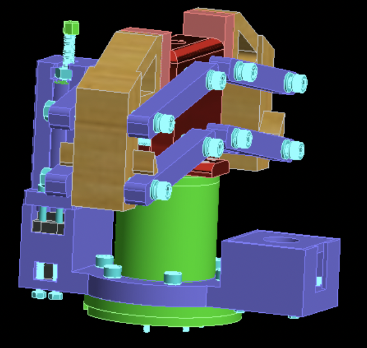
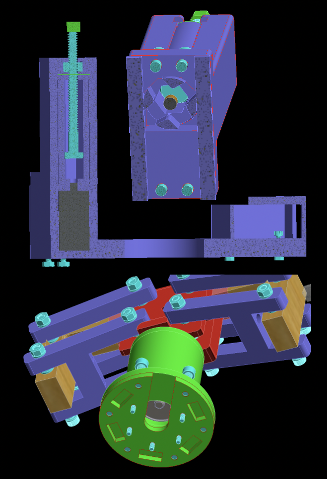
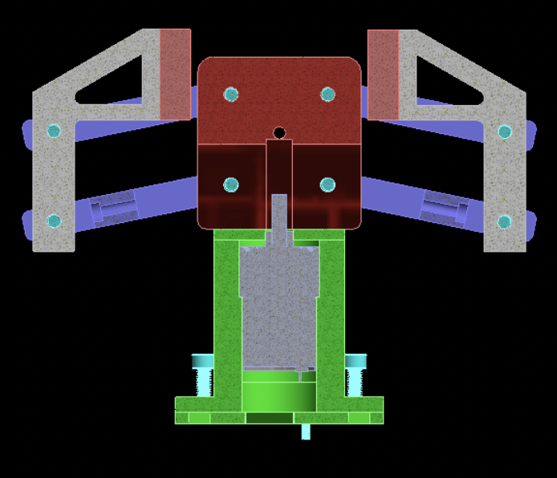

End Effector - First Prototype
Skills:
MillingAutodesk Inventor
The first prototype of the end effector utilized a 4 linkage system and a DC motor. The end effector also had a camera and self-actuating screwdriver. I manufactured the motor mount using Aluminum 6062 and a mill. Problems encountered with this prototype mostly consisted of too many points of failure in the 3D prints and too much weight.

CAD of full-scale end effector

CAD of extra tools (screwdriver, camera, laser)

CAD of cross section

Prototype with grippers open